Інтернет-видання BestRest відібрало найпопулярніші ресторани Рівного серед відвідувачів інтернету та склало рейтинг на основі їх відгуків.
В наш список потрапили тільки найкращі ресторани Рівного та його околиць, які найбільш позитивно оцінені Вами та не видаляють негативні відгуки.
Інформація буде корисна, якщо ви шукаєте заклад в Рівному де можна відсвяткувати день народження, корпоратив, весілля та інші події. Ви можете вплинути на рейтинг, оцінивши заклад в якому побували.
Ресторан "Gusto gastro salon" ("Густо гастро салон")
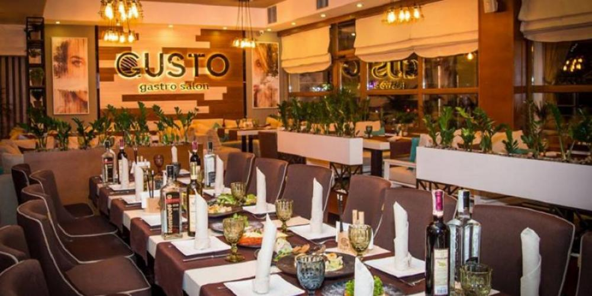 Gusto - перший космополітичний заклад у Рівному формату gastro salon, місце зустрічі однодумців, тих хто вважає основною ціллю життя – насолоду у всіх її проявах. Для тебе тут поєднали найяскравіші смаки страв з відмінними напоями, створили затишну атмосферу, доклали максимум зусиль, щоб звичайне задоволення від їжі перетворити в ейфорію. Жити заради насолоди, чи насолоджуватися життям - вибір за тобою. Смак насолоди для тебе створить Gusto.
Ресторанний комплекс "Колиба"
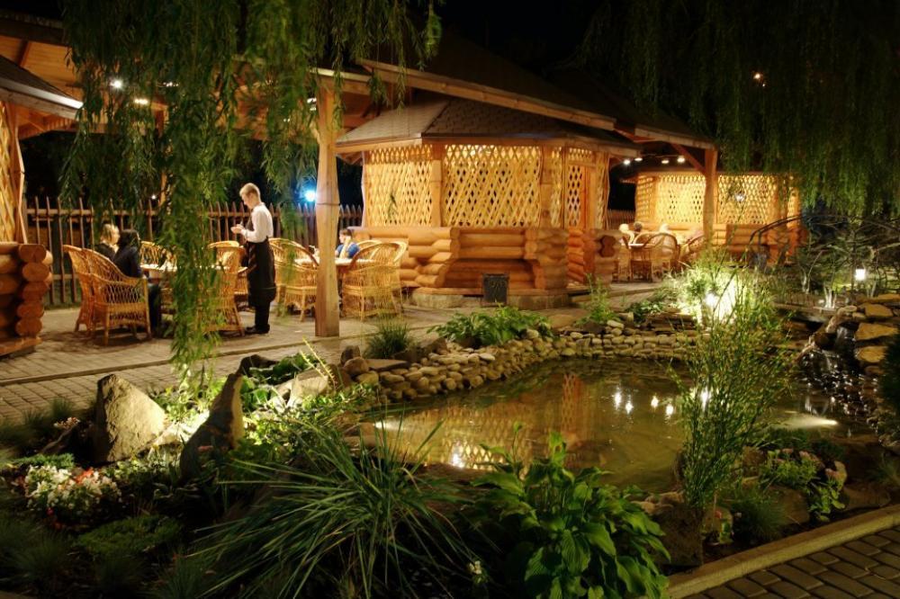 У ресторанному комплексі "Колиба" Вам радо запропонують багатий вибір вишуканих та перевірених сторіччями страв закарпатської, угорської та української кухні. Тут з любов'ю та турботою відтворено настрій та атмосферу української оселі, яка дозволить по-справжньому відпочити від шаленого ритму міського життя та повсякденних турбот. "Колиба" дещо адаптована до міста, однак її зруб виготовлений лісорубами без жодного цвяха — зі смереки, спеціально доставленої з гірських Карпат. Саме це і обумовлює екологічну чистоту споруди, теплу та затишну атмосферу і потужну позитивну енергетику всього комплексу. Ресторан оснащений кількома залами на кожному з двох поверхів, які пристосовано для проведення банкетів та бізнес-зустрічей, є і літні майданчики; тераси та альтанки на відкритому повітрі. В літню пору завжди можна помилуватися надворі прохолодним водоспадом, неквапливим струмочком та маленьким ставочком з живою фореллю. Ще у нас є унікальний закритий мангал, саме на ньому готується ексклюзивний шашлик. Страви готуються з екологічно чистих продуктів на джерельній воді та молочній сироватці. Вся їжа надзвичайно поживна, смачна та корисна.
Ресторан "БарМаки"
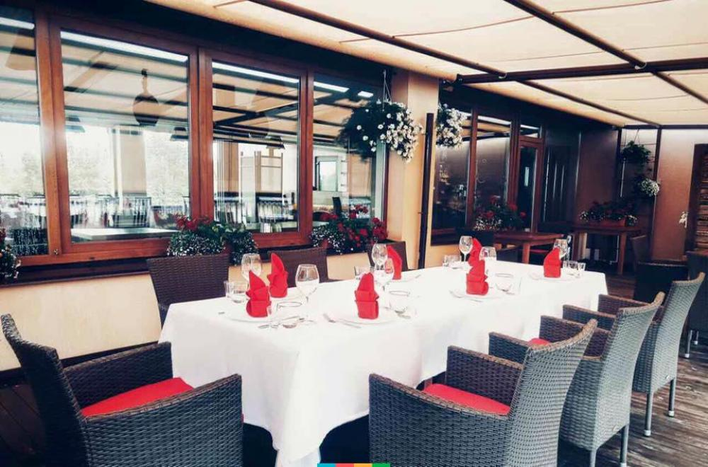 Ресторан "БарМаки" - заклад сучасної української кухні, де оформленню страв приділяють багато уваги, що потішить вибагливих естетів. Він має унікальний інтер’єр у стилі текстурний арт, де модерн поєднаний з виробами із природних матеріалів, що створює вишукану атмосферу домашнього затишку та комфорту. А панорамні вікна дозволяють відпочити від щоденної рутини, насолоджуючись спогляданням на Бармацькі пагорби. Особливістю закладу є літня тераса, яка зачаровує своїм краєвидом. Привітний персонал забезпечить якісний сервіс, що не залишить байдужим нікого. Крім того, ресторан пропонує обслуговування як класичних банкетів, так і розкішних фуршетів на високому рівні.
Ресторан "Vinograd"("Виноград")"
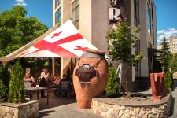 Ресторан "Vinograd" запрошує спробувати Грузію на смак. традиційний хліб шоті спечений в тандирі, хінкалі з сиром сулугуні, з м'ясом та кінзою, різноманітні хачапурі, авторські салати, страви з м’яса на будь-який смак, приготовані зі сванськими спеціями і грузинськими травами їхнім шеф-кухарем, сподобаються навіть найвибагливішому гурману. На кожному з трьох поверхів ресторану панує своя, особлива атмосфера. Приємні кольори, контраст світлих і темних відтінків, м’які диванчики, старі фотографії на стінах, книги на полицях — все це створює неповторне відчуття затишку та грузинської гостинності. Зал для бенкетів — відмінне місце для проведення тематичних вечорів, святкування днів народжень, ювілеїв, з можливістю організації свята "під ключ". Тут Ви приємно проведете час з друзями і рідними, а грузинська музика, яка постійно лунає в ресторані, створює незабутню та колоритну атмосферу. Крім того, заклад пропонує смаколики власної кондитерської та десерти ручної роботи. Послуга "з собою" дозволить Вам посмакувати грузинськими стравами вдома та пригостити друзів і рідних. Можлива організація і проведення конференцій. З рестораном "Виноград" Грузія стає ближчою.
Ресторан гриль-бар "Dvir"("Двір")
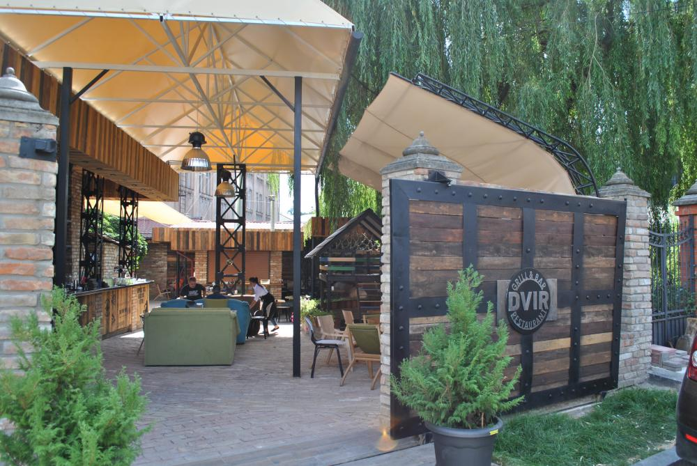 Ресторан гриль-бар "Dvir" розташований в центральній частині міста Рівного. Має унікальний інтер'єр та розташування, створюючи особливу атмосферу для своїх гостей. Пропонує своїм відвідувачам страви української та європейських кухонь, а також великий вибір напоїв на будь який смак. Привітний персонал забезпечить Вам якісний сервіс. У закладі є дуже велика і затишна літня тераса де приємно посидіти з друзями чи в сімейному колі. Приходьте у "Dvir" і будете приємно здивовані.
Пивна ресторація "Кант"
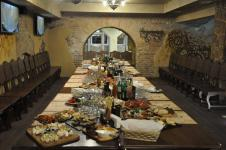 Пивна ресторація "Кант" розміщена безпосередньо на території Рівненського пивзаводу. Пропонує своїм відвідувачам відпочити у веселій дружній компанії, продегустувати живе нефільтроване, щойно зварене пиво та різноманітний вибір страв європейської кухні. Інтер’єр закладу дивує великими дерев’яними столами та стільцями, стіни оздоблені камінням, на яких висять ковані ручні вироби. "Кант" — це заклад, де можна приємно відпочити з друзями, колегами чи сім’єю. Тут Ви можете спостерігати за процесом приготування пива та різноманітних страв. Всередині залу знаходиться міні-пивоварня, де вариться, бродить і відстоюється пиво, а на мангалі готується м’ясо. Тут Ви можете скуштувати унікальне пиво зварене за спеціальною рецептурою: Pale Ale (Пейл Ейл) — 12%, India Pale Ale (ІПА) — 16%, Scottish Ale (Шотландський Ейл) — 12%, Irish dry stout (Ірландський сухий стаут) — 15%, Чеський Пільз, WeiBbier (Вайсбір) — 12%, Weibier (Вітбір) — 12%. Пивна ресторація "Кант" гарно підійде для святкування дня народження, будь-якого бенкету чи вечірки. Також у закладі можна спостерігати за трансляцією спортивних матчів, із келиком пива. У приміщенні ресторану є безкоштовний доступ до Wi-Fi.
Ресторан "Nеw York Strееt Pіzzа" ("Нью Йорк Стріт Піца")
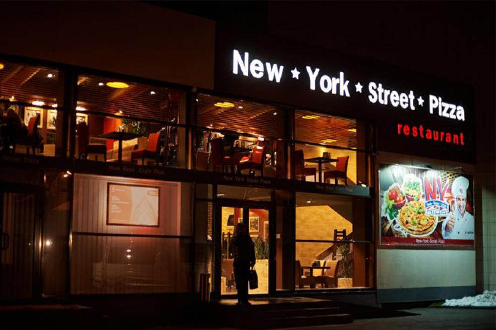 Ресторан "Nеw York Strееt Pizza" — національна мережа піцерій та ресторанів "Нью Йорк Стріт Піца". Заклад американського типу, має унікальний сучасний дизайн, детально продуманий, який захоплює з першого погляду. Скрізь присутня тематика Нью-Йорка - фото жителів і вулиць, різноманітні написи на дерев'яних дощечках. Меню ресторану багате й насичене, тому задовольнить вимогливого відвідувача. Тут Ви зможете відсвяткувати дні народження, ювілеї, проводити ділові зустрічі, а для великого святкування заклад пропонує затишний банкетний зал. Зал обладнано великим телевізором, де за попередньою домовленістю можна переглядати трансляції матчів улюблених команд.
Автентичний стріт-бар "Fortissimo" ("Фортіссімо")
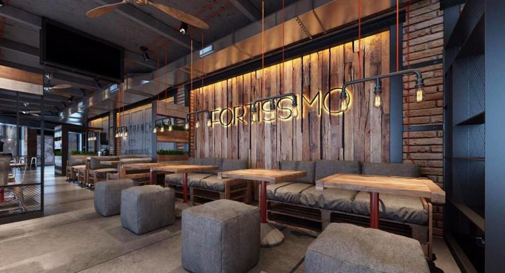 У ресторані "Fortissimo" представлені різноманітні алкогольні напої та коктейльні композиції. Крім того можна смачно поїсти, оскільки в меню широкий вибір салатів, гарячих і холодних страв. Авторська кухня американського та європейського зразку. Оскільки ресторан працює цілодобово - він відповідає ритму життя динамічного містечка західної України. Тут можна спробувати стовідсоткову «арабіку» з Бразилії, авторські кавові напої у закладі та замовити їх на доставку. До кави пропонується широкий вибір десертів у кенді барі. Можна замовити виїзне обслуговування різноманітних заходів з кавовими апаратами.
Коктейль-бар "Мармелад"
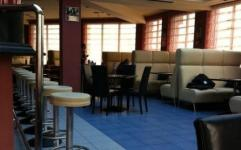 Коктейль-бар "Мармелад" знаходиться в самому серці Рівного, біля драматичного театру, тому блукати Ви не будете. Інтер'єр закладу зроблений у червоному та синьому кольорах. Мають великий основний зал, також коктейль-бар та літній майданчик (терасу). Своїм клієнтам пропонують страви української та європейської кухонь. Мають власний кондитерський цех, де готують різноманітні десерти. Великий вибір коктейлів можна спробувати у барі. Цей заклад ідеально підійде для бізнес-ланчів, ділових та дружніх зустрічей, романтичних побачень та просто приємного відпочинку. Замовивши коктейль-бар для святкування урочистих подій, Ви отримаєте задоволення та обов'язково захочете завітати сюди знову та знову. Вечірки займають особливе місце у житті закладу і завжди проходять на вищому рівні. У кальян-залі Ви завжди зможете усамітнитися, розслабитися і поринути у світ емоційно-чуттєвого задоволення.
Бар-Ресторан "Blues and Jazz"("Блюз енд Джаз")
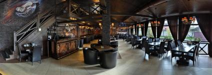 Бар-ресторан "Jazz and Blues" розташований в самісінькому центрі міста Рівного. Містить три зали, затишну терасу та зручний паркінг. Пропонує своїм відвідувачам вишуканий сервіс, а власним меню та баром задовольнить найвибагливішого клієнта. У закладі Ви можете поснідати, пообідати, замовити банкетний зал для урочистої події, відсвяткувати дитяче свято, адже мають і дитяче меню, покурити кальян та просто розслабитись та гарно відпочити. Крім того, заклад проводить численні концерти на своїй сцені. Якщо ви шукаєте місце для відпочинку, то завітайте до Jazz and Blues.
Готельно-ресторанний комплекс "Melrose" ("Мелроуз")
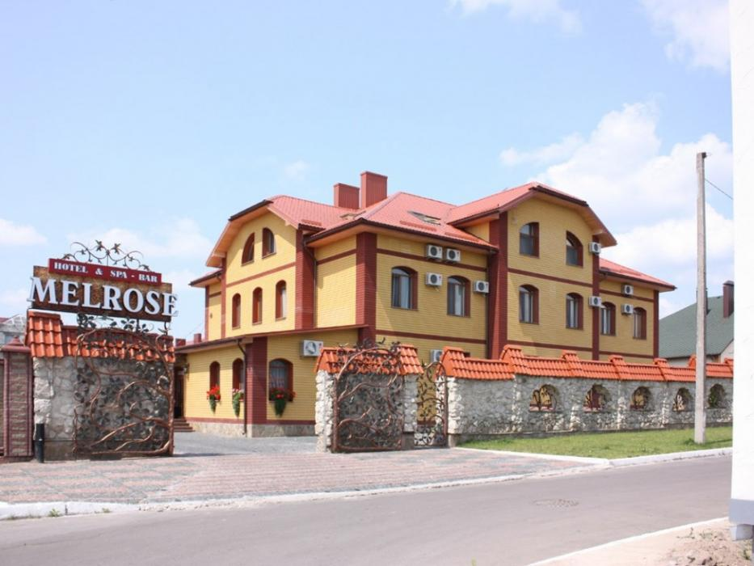 В готельно-ресторанному комплексі "Мелроуз" Вам запропонують не лише класичні страви європейської або української кухні, а також неповторні авторські ідеї від шеф-кухаря. Для гостей передбачено 15 готельних номерів класів: Стандарт Люкс Апартаменти До Ваших послуг: фінська парна на 4-6 людей басейн турецька лазня - хамам кімната відпочинку з м'яким диваном і традиційними дерев'яними лежаками приготування духмяних трав'яних чаїв на будь-який смак. Також у готелі "Мелроуз" Ви можете відпочити компанією за грою у більярд. А завдяки приємним і, водночас, корисним спа-процедурам "Melrose", при яких використовується природна косметика, ароматні масла, вершки та різноманітні морські водорості, можна позбавитись стресу, покращити настрій та загальне самопочуття.